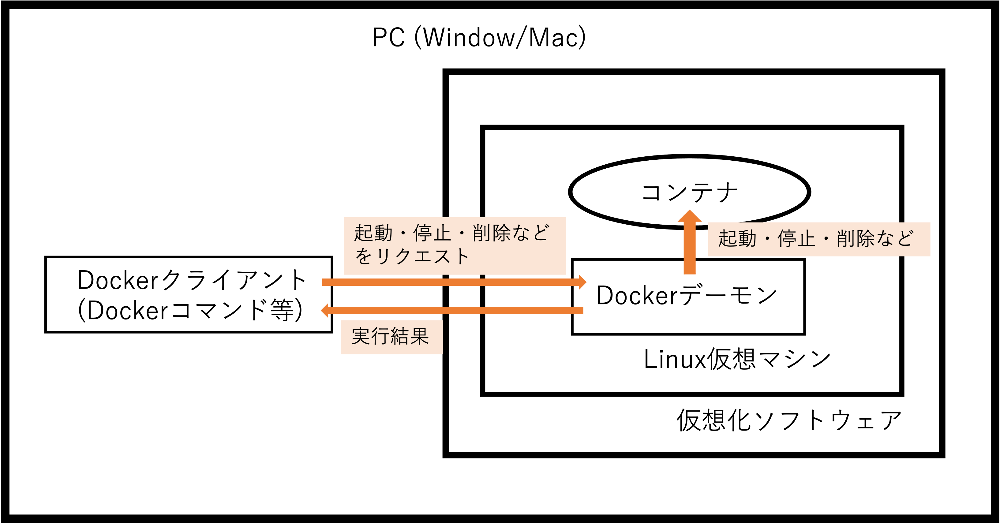

Dockerのインストール
WindowsやMacでのLinuxコンテナの動き方

Dockerを使うにはDockerコマンドをクライアントとしてDockerコマンドを実行することでDockerデーモンに指示を出す。
DockerデーモンはLinuxの仮想マシン上で自動で起動する。
winsowsやMacOS上で動作させる場合には、内部的にLinuxの仮想マシンが起動して、Linuxコンテナを起動して動作する。
この仮想マシンには軽量なLinuxOSであるTiny Core LinuxというOSが使用されている。
仮想化ソフトウェアはインストールしたDockerソフトウェアによって異なる。
- Mac向けのDocker Desktop：MacOSに含まれるHyper Kit
- Windows向けのDocker Desktop：Hyper-V(ハイパーバイザー)
- Docker Toolbox：Virtual Box
サーバー上で動作させる場合には直接linuxのホストOS上でDockerを使用するのが一般的だが、PCで動作するDockerの場合にはこのような構成になっている。
そのため、Windows OSやMac OS上でLinuxコンテナを起動できる。
Windows版 Docker Desktopのインストール
Docker DesktopはHyper-Vが必要なため、windows10 pro以上の64bit版OSを使用している場合に利用できる。
- Dockerの公式サイトを開いてDocker Desktopのインストーラー(Doccker Desktop
Installerというファイル)をダウンロードする。
- インストールする際に「デバイスに変更を加えることを許可しますか」といった確認画面が出ることがあるが、「はい」を選択。
PCの管理者のパスワードを求められた場合もパスワードを入力して進める。
- インストールが進んで「Configuration」の画面になったら「OK」をクリック。
- インストールが完了して「Installation succeeded」の画面になったら、PCを再起動する。
- 再起動後にDockerのアプリケーションが自動で立ち上がり、Dockerを使えるようになる。
Windows版Docker Desktopの設定メニュー
Docker Desktopが起動してるかどうか確認するにはPC画面右下にクジラのアイコンが出ているかどうかを確認する。
クジラのアイコンがアニメーションしている場合はDocker Desktopが起動中のため、止まるまで待つ必要がある。
Docker Desktopや付属ツールのバージョンは、クジラのアイコンを右クリックして出てくるメニューの「About Docker Desktop」から確認できる。
メニューの「Settings」では、Docker Desktopの一般的な設定やDockerデーモンが動作しているLinux仮想マシンへのリソースの割り当てなどができる。
Settings メニュー
- General：PCにログインした際のDocker Desktopの自動起動の設定やアップデートのチェックを自動で行うかなどの設定。通常はデフォルトで自動起動になっている。
- Resources：Dockerデーモンを動かしている仮想マシン関連の設定。
- ADVANCED：仮想マシンに割り当てるCPUやメモリなどのリソース設定。
- FILE SHARING：Dockerのバインドマウントという機能で必要になる設定。PCのフォルダをコンテナに共有する際にDockerにフォルダーの共有を許可するなどの設定
- PROXIES：Dockerイメージというコンテナの起動に必要なファイルをインターネットから取得する際に使用するプロキシの設定。PCを直接インターネットに繋げられない環境の場合に設定するもの。
- Kubernetes：Docker DesktopでKubernetesを動作させたい場合に設定を行う。
Windows版 DockerDesktopの動作確認